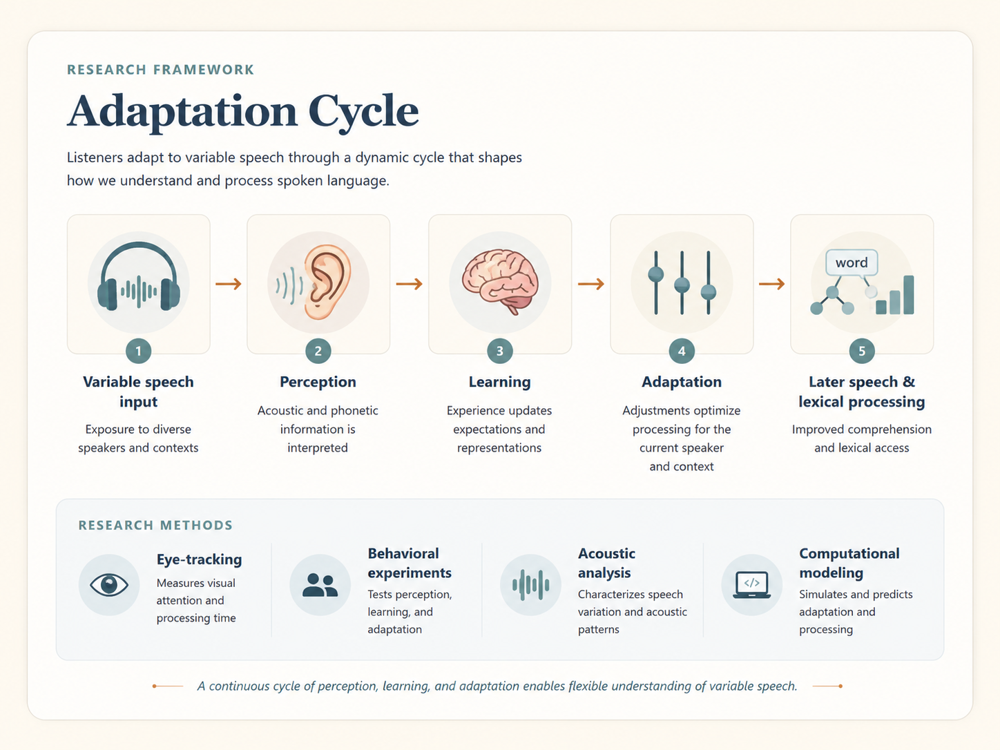

Research
My current research focuses on speech perception, speech learning, and how listeners adapt to variability in spoken language. I am especially interested in when adaptation happens, how it unfolds over time, what changes occur in the listener’s speech perception system, and how those changes affect later speech and lexical processing.

Current Project Direction
- Speech adaptation and learning in variable input
I am currently interested in questions that connect speech adaptation, eye-tracking, lexical processing, and high-variability phonetic training.
Selected Previous Project
- Investigating the Impact of Contextual Semantic Information on L2 Garden Path Sentence Comprehension
This project examined how native speakers and second-language learners use contextual information while processing garden path sentences.